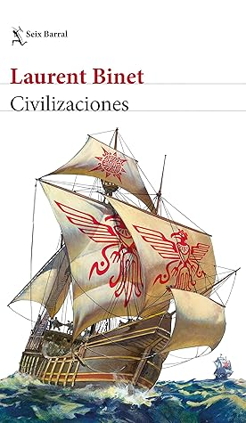

Civilizaciones
Reseña por Jorge I. Zuluaga

Ver reseña en GoodReads (necesita cuenta)
El resultado, para quienes somos de América y pensamos con orgullo y tristeza en lo que habría sido de las grandes civilizaciones perdidas después de la llegada de los españoles, es, sin embargo, una mezcla entre orgullo y sincera desazón.
La novela es el sueño de cualquier "americanista", pero también la confirmación de lo que son quizás las intuiciones de los escépticos académicos de la historia: que las "historias alternativas" ("¿qué hubiera pasado si...?"), incluso guiadas por quienes supuestamente fueran más virtuosos, tal vez, a la larga, no producirían un mundo muy diferente al que conocemos.
Es difícil hablar de esta novela sin introducir ningún spoiler. Pero no pretendo que quien se atreva a leer esta reseña antes de devorar la novela (aunque sé que serán pocos, si no ninguno) se pierda algunas de las sorpresas que están entre las cosas que más me han gustado de ella.
Debo reconocer que es mi primera novela histórica contrafactual. Después de leer un buen número de novelas históricas "convencionales" y de libros de divulgación histórica, hay que reconocerle a Binet una capacidad de imitación impresionante: el tono de la novela, la manera como son narrados los hechos y el desenlace de acciones que parecen increíbles son muy parecidos a las cosas que encontramos en la historia real. En este aspecto, la novela es impecable.
Como seguramente habrán leído en la descripción del libro (¡odio repetir lo que ya está escrito allí y las reseñas que lo hacen! ¡No tiene sentido!), el libro es una colección relativamente heterogénea de sagas escandinavas (ficticias), crónicas americanas (en su mayor parte), cartas, documentos históricos (naturalmente inexistentes) y narraciones en tercera persona que cuentan una historia alternativa del encuentro entre dos continentes: América y Eurasia. La mayor parte de la novela (pero no la única, como se asume normalmente) se dedica a describir lo sucedido después de que Atahualpa desembarca en la Europa del siglo XVI, azotada por guerras religiosas y enfrentamientos intestinos entre imperios vecinos. Pero eso es solo la punta de este iceberg.
Por la novela desfilan por igual vikingos, incas, taínos, turcos, berberiscos, judíos, papas, piratas, reyes, dioses, pirámides y hasta personajes reales como Cristóbal Colón (protagonista temprano de la "contrahistoria") o el "manco de Lepanto". No se puede decir más sin arruinar algunas sorpresas.
Lo más satisfactorio: entender que no es realmente imposible que la historia del encuentro entre el Viejo y el Nuevo Mundo (¿adivinen cuál es cuál en la novela?) hubiera sido distinta. Es obvio que el americanista académico podrá presentar cien argumentos en contra de las fantasías de Binet, pero si algo es valioso de esta ficción es que pocas cosas parecen realmente inverosímiles.
Que los vikingos hubieran descendido por las costas de América e intercambiado productos y cultura con los habitantes del Caribe; que los pueblos de los incas, en medio de sus guerras civiles, hubieran alcanzado las costas del Caribe americano y entrado en contacto con tecnología marítima desconocida; que hombres sin experiencia marítima hubieran cruzado el océano en dirección contraria a aquella en la que había llegado Colón o los vikingos, y hacerlo en naves ajenas (pero después de saber que había algo al otro lado); que al llegar los incas encontraran una Europa golpeada por las guerras y la peste, lo que les daría oportunidades, aun siendo pocos, de ganar terreno; que una religión completamente nueva y un pueblo (el de los incas) con una mejor relación con el medio ambiente pudieran calar en la Europa religiosamente convulsionada de los 1500; que el "quinto cuarto" iberoincaico fuera amenazado desde la misma frontera por la que había llegado; y un largo etcétera que el lector descubrirá.
Muy entretenidos también son los giros que el autor termina dando a hechos bien conocidos de la historia de Europa y la de América de aquel tiempo: el secuestro de un rey, la traición de una reina, las alianzas imposibles entre enemigos reconocidos, una reforma dentro de la reforma, el arte al servicio del mejor postor, una revuelta popular, divorcios prohibidos, papas y jerarcas religiosos corruptos, y otra vez, un largo etcétera.
Al principio pensé en darle solo cuatro estrellas. Hay apartes que en realidad sí suenan inverosímiles. Pero al terminar esta reseña y leer lo que yo mismo he escrito, no me cabe la menor duda de que esta es una novela de cinco estrellas.
Si les gusta la historia (¡y más si son americanos!), ¡lean Civilizaciones!